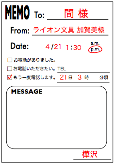
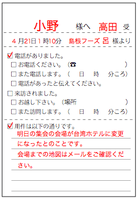
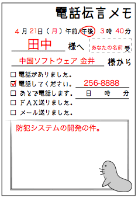
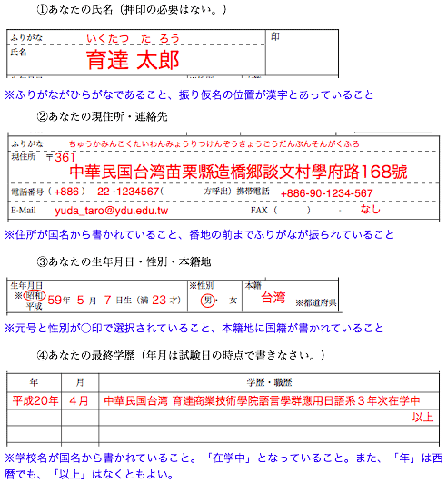

問題１
電話での会話を聞いて伝言メモを作りなさい。会話はそれぞれ３回繰り返して再生する。メモは、それぞれ解答欄で指定された形式で作りなさい。なお、日時は適当なものにすること。また、取次者の名前がわからない場合は、自分の名前にすること。
- ヒント（出現する固有名詞の一部）：
-
- 育達製作所、玉田、高野、佐藤、マイナー化学
- 加賀美、間、樺沢、ライオン文具、育達出版
- KYコンピュータ、佐々木、劉、コリア自動車、ペク
- 小野、島根、高田、呂、談文水産、台湾ホテル
- 育達警備システム、金井、中国ソフトウェア
正答例：（配点：10×５=50）

※日時については、内容と矛盾がないことを正答の条件とする。
音声ファイル：
スクリプト：
- 育達製作所でございます。
- あ、マイナー化学の玉田ですけど。佐藤さんですね。先日はどうも。
- いえ、こちらこそお世話になりました。
- ええ、高野さん、お願いできますか。
- はい、お待ちください。
- はい。
- あ、すみません。高野は午後からの出社です。
- あ、そうですか。う〜ん。
- 高野から電話させましょうか？
- そうですね。じゃあ、わたしの携帯の方に電話してください。
- はい。わかりました。ええ、電話番号は……
- あ、多分、わかると思いますけど。ええ、いいですか？一応、言いますね。
- はい。すみません。
- 080-222-5555です。
- 080-222-5555ですね。
- はい。じゃあ、お願いしますね。
- はい。わかりました。
- ええ、それじゃあ、どうも。
- はい。

音声ファイル：
スクリプト：
- 育達出版営業部でございます。
- ライオン文具の加賀美ですが、間さんでしょうか？
- いえ、樺沢です。間は外出しておりますが。
- あ、すみません。樺沢さんでしたか。先日はどうも。お世話になりまして。
- いえ、こちらこそ。
- ええ、間さんは、何時頃のお帰りですかね？
- そうですね。３時までには戻ると思いますが。
- そうですか。じゃあ、また、その頃に電話しますので。
- わかりました。伝えておきます。
- はい。では、お願いします。
- 失礼します。
劉課長：
ＫＹコンピュータのアベ様より電話がありました。コリア自動車のペク様の紹介で、部品の納入の件で話があるそうです。また改めて電話するとのことでした。
ＫＹコンピュータのアベ様より電話がありました。コリア自動車のペク様の紹介で、部品の納入の件で話があるそうです。また改めて電話するとのことでした。
４／21 15：30 佐々木受
※採点ポイント：①宛名、②相手の所属と名前（カタカナ書き）、③要件についての説明（紹介者はなくても良い）、④相手からまた電話があること、⑤日時と取次者名
音声ファイル：
スクリプト：
- 育達エンジニアリングでございます。
- 初めてお電話いたしますが、わたくしＫＹコンピュータのアベと申します。
- はい。
- 実は、部品の納入の件で、コリア自動車のペク様より、課長の劉様をご紹介いただいたのですが。
- はい。劉でございますね。少々お待ちくださいませ。
お待たせいたしました。大変申し訳ないのですが、劉は、少し席を外しておるようでして。いかがいたしましょう。 - では、また改めてお電話いたします。
- 承知いたしました。恐れ入りますが、お名前をもう一度お願いいたします。
- はい。ＫＹコンピュータのアベと申します。
- ＫＹコンピュータのアベ様でございますね。お電話いただきましたこと、劉に申し伝えますので。わたくし、佐々木と申します。
- はい。よろしくお願いいたします。それでは、失礼いたします。
- 失礼いたします。

音声ファイル：
スクリプト：
- 談文水産でございます。
- 先ほどお電話をいたしました島根フーズの呂と申しますが、早めにお伝えしたいことがございまして。小野様はお席にいらっしゃいますか？
- 申し訳ございませんが、小野はただいま席を外しております。すぐに戻るかと思いますが、よろしければ、ご伝言承りましょうか。
- では、明日の集会の会場が、台湾ホテルに変更になったとお伝えいただけますか。
- 明日の集会の会場が、台湾ホテルに変更になったということでございますね。
- はい。
- たしかに承りました。わたくし高田と申します。
- はい。会場の地図は、後ほどメールをお送りいたしますので。
- かしこまりました。メールを見るように伝えておきます。
- ありがとうございます。よろしくお願いいたします。それでは失礼いたします。
- 失礼いたします。

音声ファイル：
スクリプト：
- 育達警備システム開発部でございます。
- 中国ソフトウェアの金井と申します。
- いつもお世話になっております。
- お世話になっております。防犯システムの開発の件でお電話したのですが、王様はいらっしゃいますか？
- 大変申し訳ございません。王は海外出張中でして。帰国は月末になるかと思いますが。
- そうですか。では、どなたか他にわかる方はいらっしゃいますか？
- 申し訳ございません。あいにく、担当の者は出ておりまして。
- そうですか。いつ頃のお戻りでしょうか？
- はっきりした時間はわかりかねますが。担当の者が戻り次第、こちらからお電話差し上げましょうか。
- そうですね。では、そのようにお願いできますか。
- かしこまりました。恐れ入りますが、お電話番号をお願いできますでしょうか。
- はい。256-8888です。
- 256-8888でございますね。
- 直接、私の机につながりますので。
- 承知いたしました。では、戻り次第、担当の田中からお電話差し上げるようにいたします。
- はい。田中さんですね。わかりました。では、よろしくお願いします。失礼します。
- 失礼いたします。
問題２
音声を聞いて、箇条書きでメモを作りなさい。なお、音声は繰り返し3回再生する。
- ヒント(出現する単語の一部)：
- 換気、風邪、咳、睡眠、蛋白質、部屋、香辛料、体調、ウイルス、胃腸、負担、栄養、ビタミン
正答例：（配点：30）
風邪を早く治す3つのポイント
- 十分な睡眠をとる
- 栄養のある食事をする
- 部屋の換気をする
音声ファイル：
スクリプト：
今日は、風邪を早く治す方法についてお話ししたいと思います。
風邪は、私たちがもっともかかりやすい病気です。もちろん風邪をひかなければ、それにこしたことはないのですが、年に１・２回は風邪をひいてしまうものです。風邪をひいてしまったときには、できるだけ早く治したいですよね。
熱があったり、咳が出たり、『風邪かな？』と思ったときに、早く体調を戻すポイントは、３つあります。
まず、十分な睡眠をとるということです。体を温かくして、しっかりと寝るように心掛けましょう。
次に、栄養のある食事です。タンパク質やビタミンを多く含むものを食べましょう。体が温まるように、温かいものを食べるのもいいですね。ただ、油や香辛料が多いものや、味の濃いものは避けましょう。風邪で弱った胃腸に負担をかけてしまいます。
最後に、部屋の換気も大切です。部屋を閉め切ったままにしておくと、ウイルスが増えてしまいます。ときどき、新鮮な空気を部屋の中に入れましょう。
以上が、風邪を早く治す３つのポイントですが、症状が重いときや症状が長引くときは医者に行きましょう。
※採点ポイント：３つのポイントのうち１つ欠けるごとに10点を減ずる。また、以下の各ポイントにつき問題がある場合は、それぞれ５点までの範囲で減ずるものとする。1. 標題があること、2. 表現が簡潔であること、3. 箇条書きの項目にマークが付いていること、4. 文末に句点がないこと、5. 表現のレベル(動詞文・名詞文)があっていること、6. その他、不自然な部分がないこと。
問題３
日本語の履歴書の書式で、次の事項を書きなさい。
- あなたの氏名（※印鑑は不要）
- あなたの現住所・連絡先
- あなたの生年月日・性別・本籍地
- あなたの最終学歴（※年月は試験日の時点）
正答例：（配点：５×４=20）
